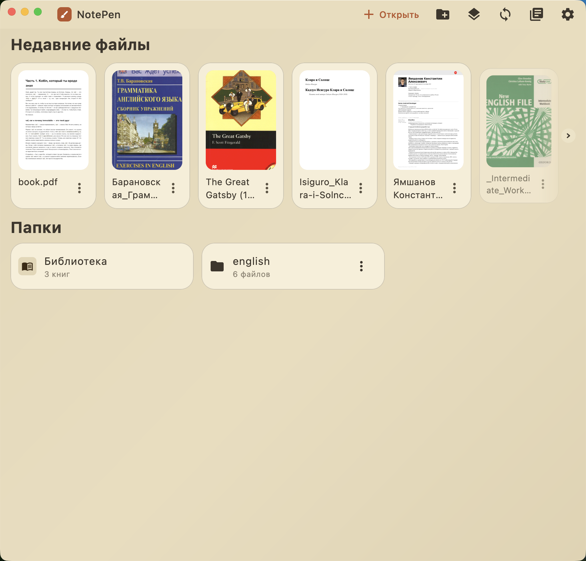
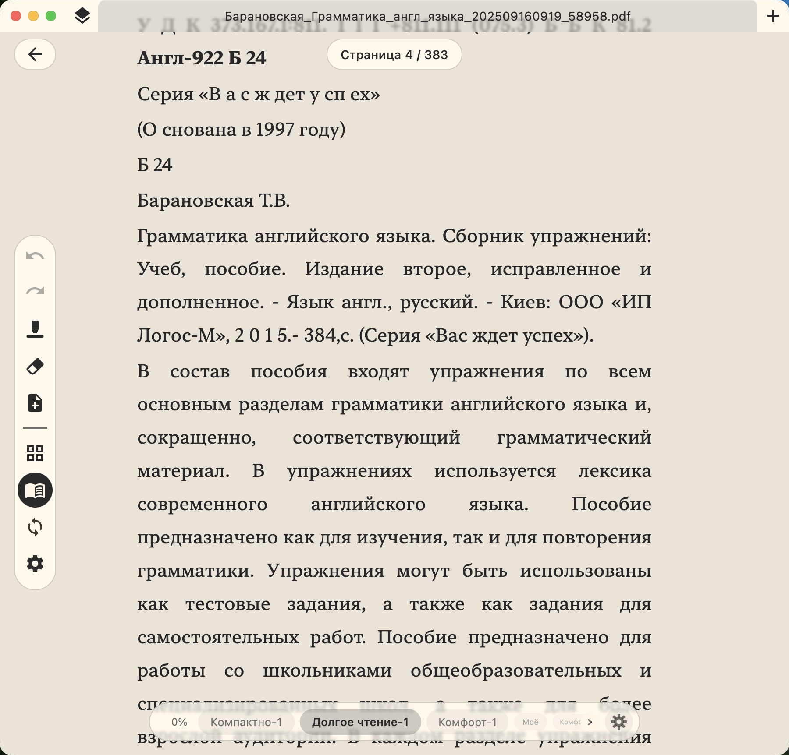
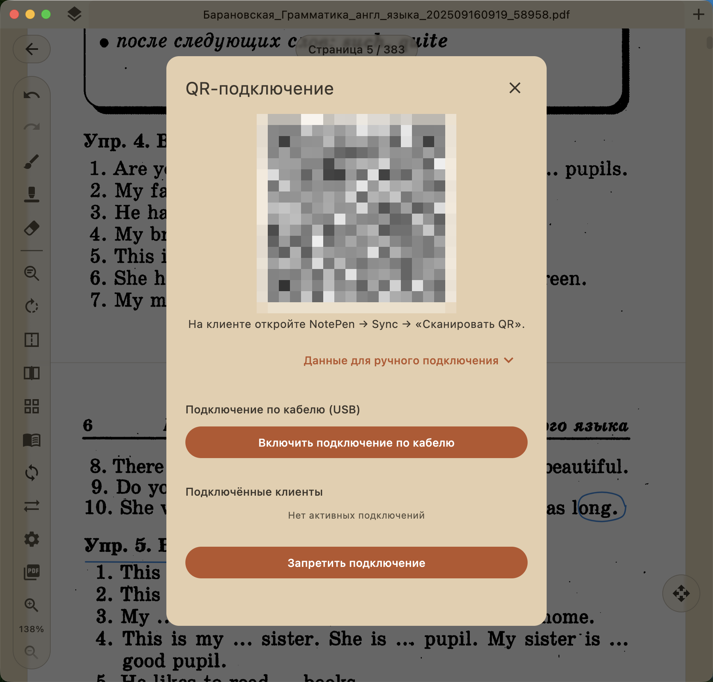

Windows
Скачать NotePen
Готовые сборки для десктопа и Android. Установка не нужна для портативной версии Windows.
Последняя версия с GitHub
Что умеет NotePen
Набор инструментов для чтения и разметки документов пером.
Бесконечный холст
Размечайте PDF и документы на холсте, который продолжается за краями страницы. Заметки, наброски и схемы не ограничены полями документа.
Перо поверх PDF
Откройте любой PDF и пишите по нему, как по бумаге. Поддерживается нажим пера для стилуса.
Маркер
Отдельный инструмент-маркер, чтобы подсвечивать нужные места в документе.
Ластик
Стирайте линии. Стирание тоже передаётся между устройствами при синхронизации.
Распознавание фигур
Нарисуйте линию или фигуру от руки, затем задержите перо. NotePen выпрямит штрих в ровную линию или превратит набросок в выделение.
Ссылки от руки
Обведите текст или нарисуйте символ, чтобы сделать ссылку на другую страницу документа или на внешний адрес.
Режим чтения с перевёрсткой
Текст документа извлекается и перекомпоновывается в удобный для чтения вид. Есть готовые пресеты под комфорт чтения и свои настройки, а заметки остаются привязаны к тексту.
Просмотр по страницам
Листайте документ по одной странице или разворотом из двух. Есть лупа для точного попадания пером.
Автосохранение
Изменения сохраняются сами. Закройте документ и вернитесь позже, заметки будут на месте.
EPUB и FB2
Встроенная конвертация превращает книги EPUB и FB2 в постраничные документы, по которым можно писать как по PDF.
Удобное письмо и заметки
Пишите пером так, как привыкли на бумаге, и держите почерк аккуратным.
Графический планшет и стилус
Перо понимает нажим и наклон, кнопку на корпусе и ластик-наконечник. На Windows работают планшеты Wacom и совместимые через WinTab, на macOS перо подключается напрямую, на Android пишет встроенный стилус.
Лупа для письма
Пишите в плавающей панели крупно и спокойно, а чернила ложатся на страницу мелко и точно. Лупа сама едет вдоль строки, так что писать получается быстро. Её можно закрепить на месте, и она дотягивается даже через границу страницы. Включается с панели инструментов.
Как пользоваться
Несколько шагов от открытия документа до синхронизации заметок.
1
Откройте документ
Откройте PDF или импортируйте книгу EPUB или FB2. Книга превращается в постраничный документ. На главном экране лежат недавние файлы и папки.

2
Пишите по странице
Пишите и рисуйте пером с поддержкой нажима. Переключайтесь на маркер или ластик, когда нужно. Задержите перо после штриха, чтобы выпрямить его в линию или превратить в выделение.
3
Читайте с перевёрсткой
Переключитесь в режим чтения и выберите пресет под комфорт чтения. В просмотрщике можно включить одну страницу или разворот из двух. Заметки остаются привязаны к тексту.

4
Синхронизируйте устройства
Подключите второе устройство, отсканировав QR-код. Заметки синхронизируются по локальной сети. Изменения сохраняются автоматически.

Библиотека и синхронизация
Все документы под рукой, а заметки одни и те же на всех устройствах.
Ваша библиотека
Все документы в одном месте. На главном экране видны недавние файлы, папки и обложки страниц. Откройте PDF или книгу EPUB либо FB2, и она станет страницами, по которым можно писать. Всё остаётся на вашем устройстве, аккаунт не нужен.
Заметки на всех устройствах
Заметки остаются одинаковыми на всех ваших устройствах в одной сети. Начните на планшете и продолжите на компьютере. Без облака и без аккаунта.
Чтобы связать два устройства, покажите QR-код на одном и отсканируйте его на другом.
Платформы
Один общий код на Kotlin Multiplatform для всех целей.
- Android
- Windows
- macOS
- Linux
Сборка из исходников
Это для тех, кто хочет участвовать в разработке. Если вам нужно просто пользоваться приложением, берите готовую сборку выше.